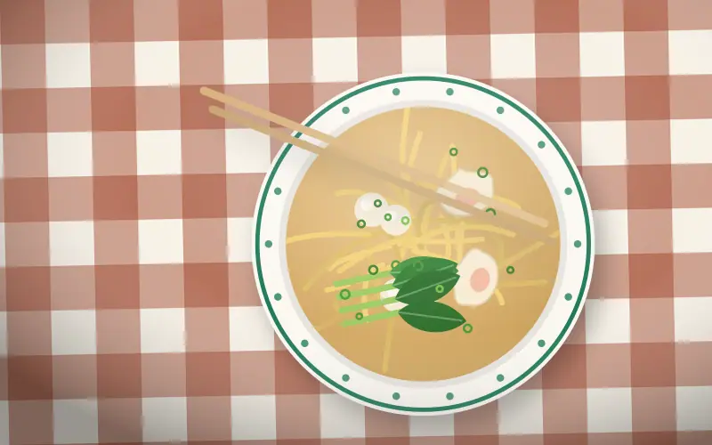
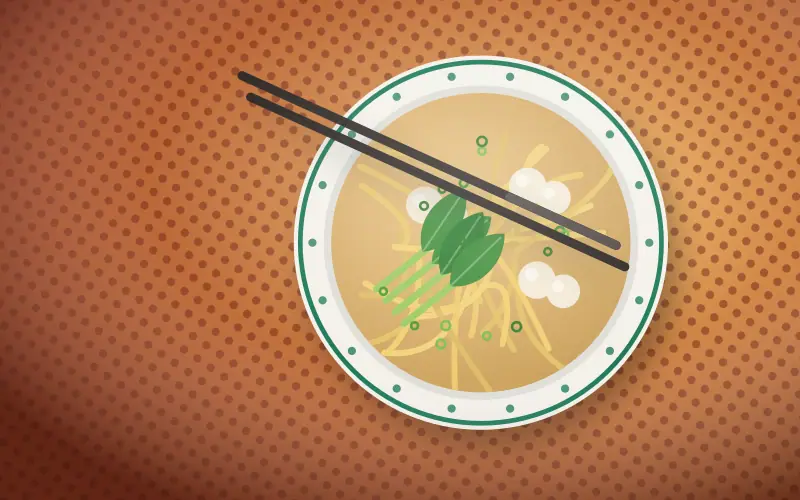

Cheap noodles in Hong Kong 粉麵
16 places, from HK$40, ranked by Value Score.

Lau Sum Kee劉森記麵家 · Sham Shui Po$46 On Lee Noodle安利魚蛋粉麵 · Shau Kei Wan~$40
On Lee Noodle安利魚蛋粉麵 · Shau Kei Wan~$40 Tsim Chai Kee Noodle沾仔記 · Central~$42
Tsim Chai Kee Noodle沾仔記 · Central~$42 Tak Fat Beef Balls德發牛丸 · Central~$42
Tak Fat Beef Balls德發牛丸 · Central~$42 Mak An Kee Noodle麥奀記（忠記）麵家 · Central~$45
Mak An Kee Noodle麥奀記（忠記）麵家 · Central~$45 Man Kee Cart Noodle文記車仔麵 · Sham Shui Po~$48
Man Kee Cart Noodle文記車仔麵 · Sham Shui Po~$48 Wai Kee Noodle Cafe維記咖啡粉麵 · Sham Shui Po~$50
Wai Kee Noodle Cafe維記咖啡粉麵 · Sham Shui Po~$50
Kau Kee九記牛腩 · Sheung Wan$72 Sister Wah華姐清湯腩 · Tin Hau$68
Sister Wah華姐清湯腩 · Tin Hau$68  Kwan Kee Bamboo Noodle坤記竹昇麵 · Cheung Sha Wan~$58
Kwan Kee Bamboo Noodle坤記竹昇麵 · Cheung Sha Wan~$58 Mak Man Kee麥文記麵家 · Jordan$64
Mak Man Kee麥文記麵家 · Jordan$64  Mak's Noodle麥奀雲吞麵世家 · Central$68
Mak's Noodle麥奀雲吞麵世家 · Central$68  Ho To Tai Noodle好到底麵家 · Yuen Long~$58
Ho To Tai Noodle好到底麵家 · Yuen Long~$58 Wing Wah Noodle Shop永華麵家 · Wan Chai$78
Wing Wah Noodle Shop永華麵家 · Wan Chai$78  Chee Kei (Central)池記（中環） · Central$68
Chee Kei (Central)池記（中環） · Central$68  Chee Kei (Tsim Sha Tsui)池記（尖沙咀） · Tsim Sha Tsui$72
Chee Kei (Tsim Sha Tsui)池記（尖沙咀） · Tsim Sha Tsui$72 More guides
Best meals under HK$50Cheap eats under HK$30Best value for moneyLate-night cheap eatsHidden gemsCheap breakfast in Hong KongRoast Meats 燒味Cha Chaan Teng 茶餐廳Dim Sum 點心Noodles 粉麵Congee 粥品Claypot 煲仔Cantonese 粵菜Seafood 海鮮Desserts 甜品Bakery 餅店Street Snacks 小食Vegetarian 素食HK Fast Food 快餐Rice Noodles 米線Thai 泰國菜Curry 咖喱Japanese 日式Vietnamese 越南菜Taiwanese 台灣菜Shanghainese 上海菜Dumplings & Northern 北方菜HK-style Western 港式西餐